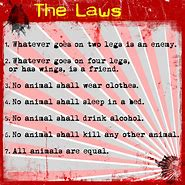

Comrade Old Major finally spoke up over society... our fellow comrades were always suppresed until he spoke out. We sung Beasts of England after his great speech, and to this day is still remembered. Sadly, he passed a few days after. We all eventually pushed evil Jones out and got our farm, and took back our land. Once that happened, everything changed from that point on. All animals got more than enough food, we changed the farm, built windmills, and more! Thanks to Old Major, none of this would be possible. It's been so long since I last saw him. Rest in Peace, Old Major. 💖
 History Page FAQ page About Me Page Join rebellion!